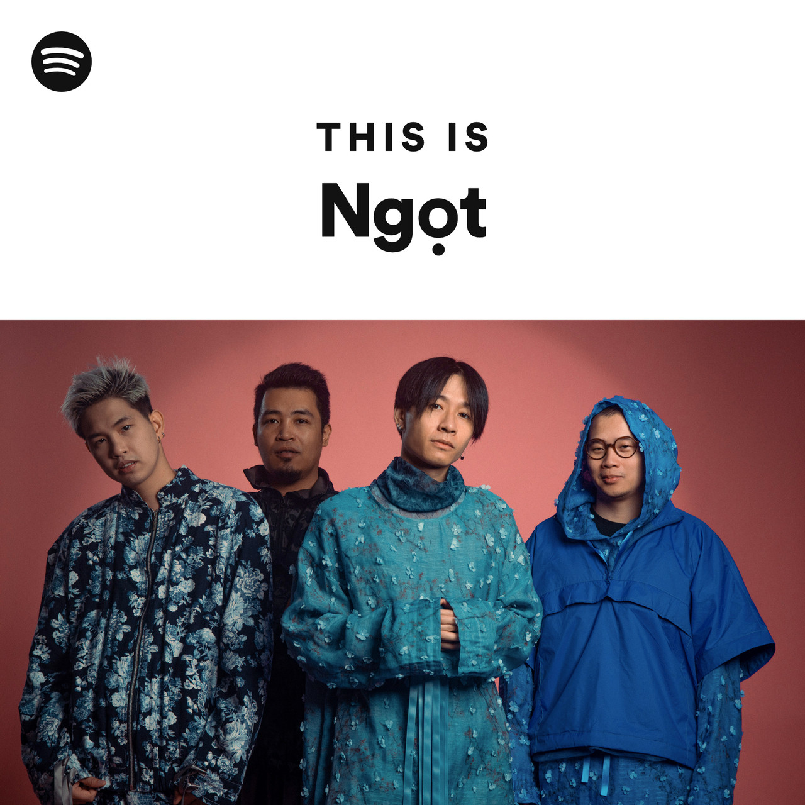
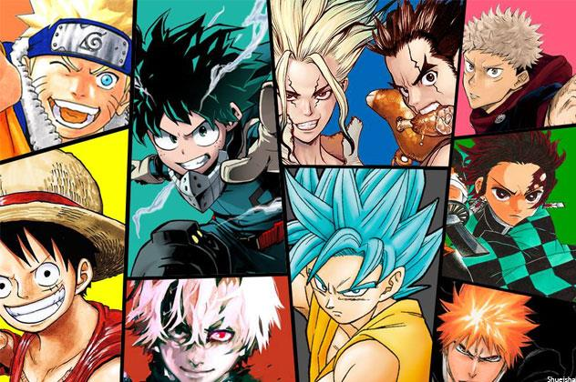

My name is Nguyen Minh Hien and this is information about me!
My Country
The place I was born is Vietnam. This is a beautiful country with an S-shaped shape. It has delicious food and majestic and poetic natural scenery, with beaches, forests, and caves. In addition, I am very proud of my country because after thousands of years of building and defending the country, Vietnam has written many brilliant golden pages of history about heroic battles and great heroes who have served the country. sacrificed.
My School
Glenunga International High School inspires every student to develop their potential as an internationally minded, creative thinking, responsible citizen. Glenunga International High School offers a broad-based, 21st Century curriculum designed to meet the needs of each student. Combined with our requirements for success, our curriculum specialisations offer many opportunities for students to develop their potential and follow pathways to further study or employment. Opportunity is a key school value.
My Hobbies


One of my favorite pastimes is listening to music by Ngọt, a talented Vietnamese musician whose melodies resonate deeply with me. Additionally, I find great enjoyment in immersing myself in the captivating world of manga and anime, where imaginative storytelling and vibrant visuals come together to create unforgettable experiences. Another passion of mine is playing volleyball, a sport that not only challenges me physically but also fosters teamwork and camaraderie. Whether I'm lost in the melodies of Ngọt's music, engrossed in the pages of a manga, or diving for a volleyball on the court, these hobbies bring me immense joy and fulfillment.